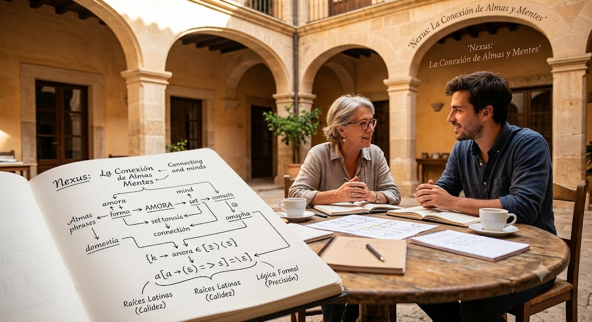

Gobierno, Leyes y Sociedad: El poder de la ciudadanía
En Nexa, el futuro no lo deciden unos pocos; lo construimos todos en tiempo real. Hemos dejado atrás la política tradicional para dar paso a un sistema transparente, ético y diseñado por y para las personas.
Sistema Político: Democracia Digital Líquida
Creemos en una participación real, sin intermediarios obligatorios ni promesas rotas. Nexa se rige por una Democracia Líquida Digital, un modelo revolucionario donde cada ciudadano tiene el control absoluto de su voz. A través de una plataforma encriptada de identidad digital ultra segura, puedes votar directamente cada ley y decisión del país, o si lo prefieres, delegar temporalmente tu voto en expertos de tu confianza para temas específicos (como ecología o economía). El poder fluye de manera constante, directa y transparente.


La Constitución: Nuestras 5 Leyes Fundamentales
Nuestra convivencia se sostiene sobre cinco pilares inquebrantables. No son solo leyes; son promesas de futuro y bienestar para cada habitante de Nexa:
- Derecho a la Conectividad Humana: La red es un derecho, no un privilegio. Se garantiza el acceso libre, neutral y completamente gratuito a la red global para todos los ciudadanos. Estar conectados es estar unidos.
- Sostenibilidad Obligatoria: El planeta es nuestro hogar, no nuestro vertedero. Ninguna actividad humana o industrial puede contaminar más de lo que el propio entorno sea capaz de regenerar de forma natural.
- Transparencia Absoluta: En Nexa, la luz pública lo ilumina todo. Cada cuenta, gasto y decisión del gobierno queda registrada en una red abierta y accesible para la auditoría y el control de cualquier ciudadano, en cualquier momento.
- Ingreso de Bienestar Ciudadano: La tranquilidad no es negociable. Garantizamos de forma universal el acceso a una vivienda digna, una alimentación saludable y una educación tecnológica continua para que nadie se quede atrás.
- Libertad de Desarrollo Personal: Tu camino lo eliges tú. Cada nexiano tiene la libertad absoluta de explorar su crecimiento laboral, artístico o científico sin barreras, fomentando el talento único de cada individuo.
Idioma: El "Nexus"
Nuestra forma de comunicarnos refleja quiénes somos. La lengua oficial del país es el Nexus, un idioma fascinante y melódico que fusiona la calidez de las raíces latinas con la estructura y claridad de la lógica formal. Es un lenguaje diseñado para conectar corazones y mentes con la máxima precisión y belleza.
